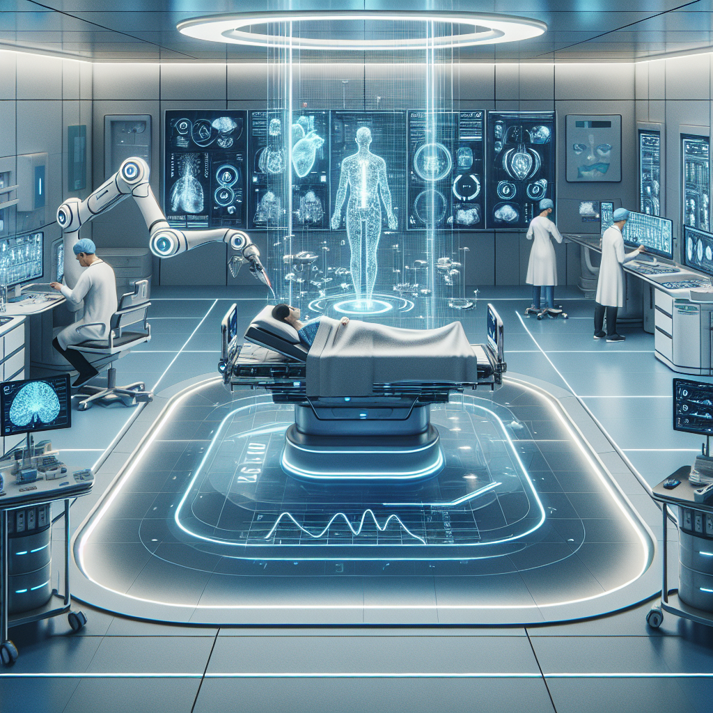

By 2040, artificial intelligence (AI) is expected to transform healthcare fundamentally, ushering in an era of predictive, personalized, and highly accessible medical care. Advances in AI will enhance diagnostics, treatment, drug discovery, and healthcare delivery, while raising critical ethical and regulatory considerations essential for safe and equitable implementation.
AI technologies will enable near-continuous health monitoring through advanced wearables, implantables, and IoT medical devices, analyzing biomarkers in real time to predict the onset of diseases months or even years in advance. These capabilities will shift healthcare from reactive treatment to proactive prevention, reducing the burden of chronic diseases such as diabetes, heart disease, and autoimmune disorders.
By integrating multifactorial data—genetic information, lifestyle habits, environmental factors—AI will generate personalized health alerts and targeted lifestyle recommendations, empowering individuals to minimize risk and maintain wellness. For example, remote patient monitoring systems capable of detecting heart failure biomarkers up to ten days earlier than traditional tests are already paving the way toward high-precision early intervention [1].
Leveraging advances in genomics, proteomics, microbiomes, and expansive health datasets, AI will facilitate "N-of-1" customized medicine tailored to individual biological and contextual profiles. This promises unprecedented efficacy and minimal adverse effects compared to today’s one-size-fits-all therapies.
Cancer treatment exemplifies this promise, as AI-driven analysis of tumor mutations and cellular environments will enable bespoke drug regimens optimized for each patient’s disease subtype. Furthermore, AI’s capability to simulate digital twin patients will revolutionize clinical trials, significantly shortening development timelines and accelerating introduction of innovative therapies to market. Traditional drug discovery timelines of 10 to 15 years are anticipated to shrink dramatically to months or a few years [2].
By 2040, surgeons and clinicians will routinely collaborate with AI-enabled robotic systems that provide surgical precision beyond human abilities, reduce complications, and optimize recovery times. These semi-autonomous robots will perform routine and complex procedures under expert human supervision, augmenting rather than replacing the medical workforce.
Beyond the operating room, AI will integrate vast clinical, imaging, and real-time patient data to provide clinicians with deeply contextualized decision support. This will enhance diagnostic accuracy, personalize treatment strategies, and reduce medical errors. Currently, AI diagnostic tools demonstrate higher accuracy than human experts in specialties like cardiology arrhythmia detection, foreshadowing their widespread adoption in clinical practice [3].
AI-powered telemedicine platforms, diagnostic kiosks, and mobile health units will bridge geographic and economic gaps by delivering expert-level care in underserved regions worldwide. Nurses and community health workers will be equipped with AI decision-support tools, enabling them to diagnose, treat, and manage patient care with unprecedented autonomy and efficacy.
The healthcare workforce will evolve accordingly, with healthcare professionals transitioning to supervisory roles overseeing AI systems, handling complex cases, and focusing on interpersonal and ethical aspects of care that require human empathy. This augmented workforce model is projected to increase productivity and address the expected shortage of healthcare staff globally [4].
As AI becomes deeply integrated with healthcare, ensuring ethical governance, data privacy, and fairness will be paramount. Regulatory frameworks will evolve to classify AI-powered medical devices and algorithms as "high-risk," requiring rigorous validation, transparency, and explainability. Initiatives akin to an "AI Hippocratic Oath" will guide ethical development and deployment, aiming to mitigate bias, prevent harm, and maintain patient trust [5].
Securing interoperable global health records while protecting sensitive data will require cutting-edge cybersecurity and consent management frameworks. Ensuring equitable AI deployment to avoid exacerbating health disparities will remain a central societal challenge.
The integration of advanced AI systems – combining continuous data synthesis, personalized insights, and autonomous capabilities – promises a future healthcare ecosystem that is more efficient, equitable, and life-extending than ever before.